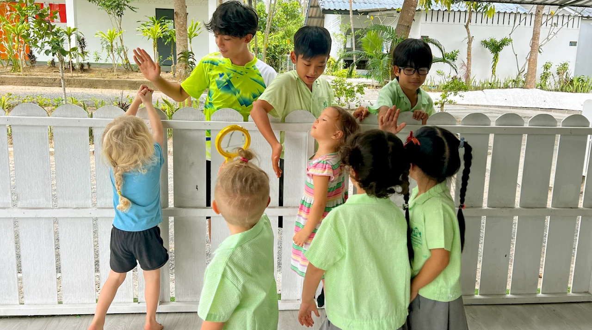
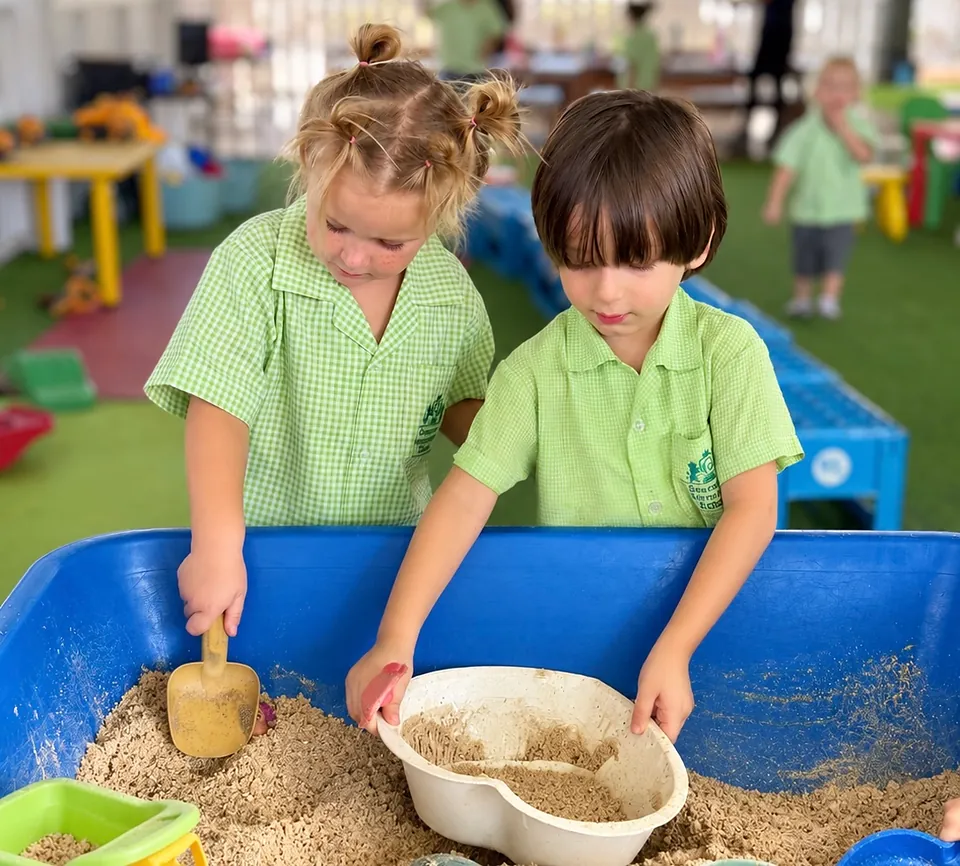

Communication & Language
Listening, speaking and building vocabulary through stories, songs and conversation.
A happy, secure and creative beginning where children learn through play, investigation and doing.
Children can join Greenacre's Early Years from age 3. We welcome children of all backgrounds, languages and abilities, planning learning around each child's interests and individual needs. A dedicated key person works closely with each child and their family, helping them feel secure, build friendships and grow in confidence.
Child-led play and carefully planned experiences spark curiosity, with outdoor exploration and garden-to-table learning connecting children to the natural world.


Early Years is a distinct and important stage of learning. Children develop academically, socially and emotionally through experiences shaped by Greenacre's GREEN values. A gentle settling-in approach helps each child feel at home.
We share children's progress with families through Learning Journeys and regular conversations, supporting a confident transition into Primary while nurturing curiosity and creativity.
We follow the Early Years Foundation Stage (EYFS) framework. All seven areas work together through play and everyday experiences.
The foundations for communication, movement, relationships and learning.
Listening, speaking and building vocabulary through stories, songs and conversation.
Developing movement and coordination through outdoor play and practical activities.
Building friendships, confidence and independence while learning to understand and manage feelings.
Building on these foundations through language, numbers, discovery and creativity.
Enjoying stories and developing early reading, phonics awareness and mark-making.
Exploring counting, shape, pattern and mathematical thinking through play.
Exploring nature, people and communities while developing care for our environment.
Developing imagination and creativity through music, art, role play, movement and construction.